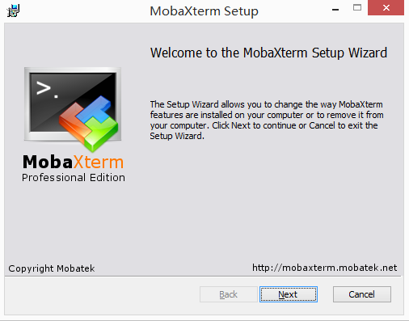
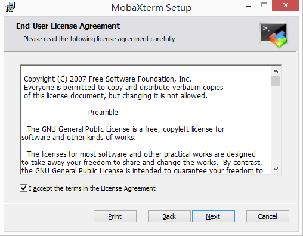
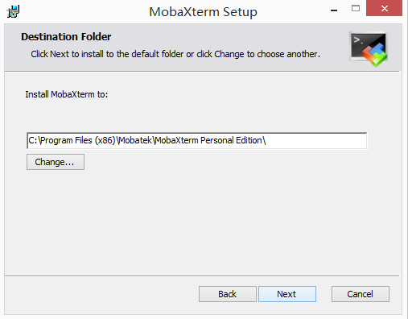
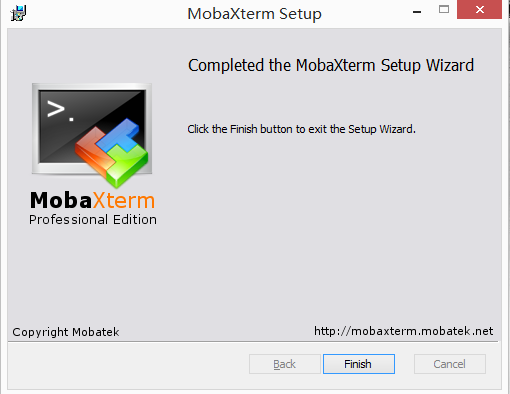
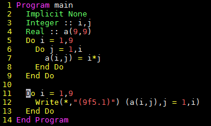
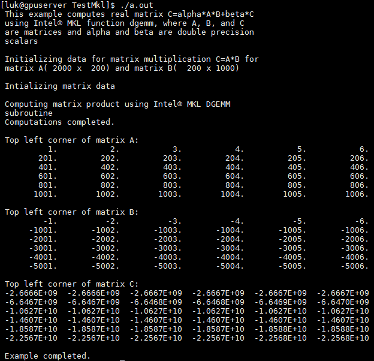
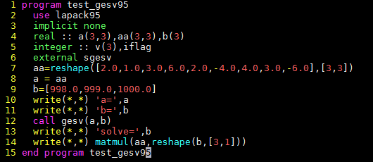
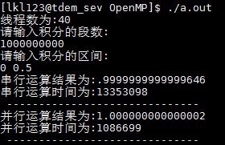

Linux简明教程-鲁凯亮¶
第一章 MobaXterm的安装¶
1. 安装MobaXterm Personal Edition¶
笔者给出下载地址，http://pan.baidu.com/s/1jHXiD6I
（1）下载并解压，以管理员身份运行MobeXter-Setup-7.0.msi，进入安装界面。
{kind=link}
（2）选择 next ，进入下一步。
{kind=link}
（3）选择“接受条款”，点击 next 。
{kind=link}
（4）选择安装路径，本次示范选择默认路径，点击 next 。
{kind=link}
（5）安装完成，点击 finish 。安装完成后，将安装包内的Git.mxt3复制到
C:\\Program files(x86)\Mobatek\MobaXterm Personal Edition\ 中文件夹内。
（依据你自己的安装路径）
双击快捷方式，打开软件，界面如下所示
{kind=link}
{kind=link}
{kind=link}
第二章 文件处理命令¶
1. ls¶
注解
命令英文原意：list
命令所在路径： /bin/ls
执行权限：所有用户
功能描述：显示目录文件
语法：
ls 选项[-ald] [文件或目录]
-a 显示所有文件，包括隐藏文件
-l 详细信息显示
-d 查看目录属性
2. cd¶
注解
命令英文原意：change directory
命令所在路径：shell内置命令
执行权限：所有用户
语法：
cd [目录]
功能描述：切换目录
范例：
cd / 切换到根目录
cd .. 回到上一级目录
说明：两个特殊的目录 . 和 .. ，分别代表当前目录和当前目录的父目录。
3. pwd¶
注解
命令英文原意：print working directory
命令所在路径： /bin/pwd
执行权限：所有用户
语法：
pwd
功能描述：显示当前所在的工作目录
范例：
pwd
输出结果： /home/lkl
5. mkdir¶
注解
命令英文原意：make directories
命令所在路径： /bin/mkdir
执行权限：所有用户
语法：
mkdir [文件名]
功能描述：创建新目录
范例：
make newdir
6. cp¶
注解
命令英文原意：copy
命令所在路径： /bin/cp
执行权限：所有用户
语法：
cp -R [源文件或目录] [目的目录]
-R 复制目录
功能描述：复制文件或目录
范例：
cp file1 file2 dir1 将文件file1、file2复制到目录dir1
cp -R dir1 dir2 将dir1下的所有文件及子目录复制到dir2
7. mv¶
注解
命令英文原意：move
命令所在路径： /bin/mv
执行权限：所有用户
语法：
mv [源文件或目录] [目的目录]
功能描述：移动文件、更名
范例：
mv file1 file3 将当前目录下文件file1更名为file3
mv file2 dir2 将文件file2移动到目录dir2下
8. rm¶
注解
命令英文原意：remove
命令所在路径： /bin/rm
执行权限：所有用户
语法：
rm -r [文件或目录]
-r 删除目录
功能描述：删除文件
范例：
mv file3 删除文件file3
mv –r dir1 删除目录dir1
9. cat¶
注解
命令英文原意：concatenate and display files
命令所在路径： /bin/cat
执行权限：所有用户
语法：
cat [文件名]
功能描述：显示文件内容
范例：
cat /etc/issue
cat /etc/services
10. more¶
命令所在路径： /bin/more
执行权限：所有用户
语法：
more [文件名]
（空格）或f 显示下一页
（Enter） 显示下一行
q或Q 退出
功能描述：分页显示文件内容
范例：
more /etc/services
11. head¶
命令所在路径： /bin/head
执行权限：所有用户
语法：
head -num [文件名]
-num 显示文件的前num行
功能描述：查看文件的前几行
范例：
head -20 /etc/services
12. tail¶
命令所在路径： /bin/tail
执行权限：所有用户
语法：
head -num [文件名]
-num 显示文件的前num行
-f 动态显示文件内容
功能描述：查看文件的后几行
范例：
tail -20 /etc/services
13. ln¶
注解
命令英文原意：link
命令所在路径： /bin/ln
执行权限：所有用户
语法：
ln -s [源文件] [目标文件]
-s 创建软链接
功能描述：产生链接文件
范例：
ln -s /etc/services /issue.soft 创建文件/etc/issue的软链接/issue.soft
ln /etc/issue /issue.hard 创建文件/etc/issue的硬链接/issue.hard
第三章 权限管理命令¶
1. chmod¶
注解
命令英文原意：change the permissions mode of a file
命令所在路径： /bin/chmod
执行权限：所有用户
语法：
chmod [{ugo}{+-=}{rwx}] [文件或目录]
[mode=421] [文件或目录]
功能描述：改变文件或目录权限
范例：
chmod g+w file1 赋予文件file1所属组写权限
chmod 777 dir1 设定目录dir1为所有用户具有全部权限
代表字符 |
权限 |
对文件的含义 |
对目录的含义 |
r |
读权限 |
可以查看文件内容 |
可以列出目录中的内容 |
w |
写权限 |
可以修改文件内容 |
可以在目录中创建、删除文件 |
x |
执行权限 |
可以执行文件 |
可以进入目录 |
2. chown¶
注解
命令英文原意：change file ownership
命令所在路径： /bin/chown
执行权限：所有用户
语法：
chown [用户] [文件或目录]
功能描述：改变文件或目录的所有者
范例：
chown somebody file1 改写文件file1的所有者为somebody
3. chgrp¶
注解
命令英文原意：change file group ownership
命令所在路径： /bin/chgrp
执行权限：所有用户
语法：
chown [用户组] [文件或目录]
功能描述：改变文件或目录的所属组
范例：
chown adm file1 改写文件file1的所属组为adm
第四章 文件搜索命令¶
2. find¶
命令所在路径： /usr/bin/find
执行权限：所有用户
语法：
find [搜索路径] [搜寻关键字]
功能描述：查找文件或目录
范例：
find /etc –name init 在目录/etc中查找文件init
find / -size +204800 在根目录下查找大于100MB的文件
find / -user sam 在根目录下查找所有者为sam的文件
3. locate¶
注解
命令英文原意：list files in databases
命令所在路径：/usr/bin/locate
执行权限：所有用户
语法：
locate [搜寻关键字]
功能描述：查找文件或目录
范例：
locate file 列出所有和file相关的文件
4. grep¶
命令所在路径： /bin/locate
执行权限：所有用户
语法：
find [指定字符串] [源文件]
功能描述：在文件中搜寻字符串匹配的行并输出
范例：
grep ftp /etc/services
第五章 帮助命令¶
1. man¶
注解
命令英文原意：manual
命令所在路径： /usr/bin/man
执行权限：所有用户
语法：
man [命令或配置文件]
功能描述：获得帮助信息
范例：
man ls 查看ls命令的帮助信息
man services 查看配置文件services的帮助信息
2. info¶
注解
命令英文原意：information
命令所在路径： /usr/bin/info
执行权限：所有用户
语法：
info [任何关键字]
功能描述：获得帮助信息
范例：
info ls 查看ls命令的帮助信息
3. whatis¶
命令所在路径： /usr/bin/whatis apropos
/usr/bin/makewhatis
执行权限：所有用户
语法：
whatis [任何关键字]
功能描述：获得索引的简短说明信息
范例：
whatis ls 查看ls命令的帮助信息
第六章 压缩解压命令¶
2. gunzip¶
注解
命令英文原意：GNU unzip
命令所在路径： /bin/gunzip
执行权限：所有用户
语法：
gunzip 选项 [压缩文件]
功能描述：解压缩.gz的压缩文件
范例：
gunzip file1.gz
3. tar¶
命令所在路径： /bin/tar
执行权限：所有用户
语法：
tar 选项[cvf] [目录]
-c 产生.tar打包文件
-v 显示详细信息
-f 指定压缩后的文件名
-z 打包同时压缩
功能描述：打包目录
压缩后文件格式：.tar.gz
范例：
tar –zcvf dir1.tar.gz dir1 将目录dir1压缩成一个打包并压缩的文件
tar命令解压缩语法
-x 解包.tar文件
-v 显示详细信息
-f 指定解压文件
-z 解压缩
范例：
tar –zxvf dir1.tar.gz
4. zip¶
命令所在路径： /usr/bin/tar
执行权限：所有用户
语法：
zip 选项[-r] [压缩后文件名称] [文件或目录] -r 压缩目录
功能描述：压缩文件或目录
压缩后文件格式：.zip
范例：
zip services.zip /etc/services 压缩文件
zip –r test.zip /test 压缩目录
5. unzip¶
命令所在路径： /usr/bin/unzip
执行权限：所有用户
语法：
unzip [压缩文件]
功能描述：解压.zip的压缩文件
范例：
unzip test.zip /test
第七章 文件上传与下载以及注意事项¶
1. 文件上传与下载¶
启动MobeXter后，在上传文件之前一定不要先登陆，输入下面命令行上传代码
scp –r /drives/d/file username@192.168.199.101:/home/username/work
以笔者为例
scp –r /drives/d/file lkl@192.168.199.101:/home/lkl/work
命令行的意思是将笔者PC上D盘中的文件（夹）上传到家目录下的用户lkl下的work目录中。
在服务器上算完程序后，通常我们要将计算出来的数据下载到PC，下面给出下载文件的命令行
scp –r username@192.168.199.101:/home/username/work/shuju.dat /drives/d
同样，以笔者为例
scp –r lkl@192.168.199.101:/home/lkl/work/shuju.dat /drives/d
命令行的意思是将家目录下的用户lkl下的work目录中的shuju.dat数据文件下载到PC的D盘中。
2. 注意事项¶
（1）Linux严格区分大小写，命令名基本都是小写的英文字母
（2）方括号部分是可选项，可以不出现
（3）多个选项可以同时出现，例如： ls -ah
（4）注意命令额参数之间的空格，多个空格也视为一个空格
（5）续行符 \
（6）tab键自动补齐功能。比如 work 目录下只有 shuju.dat 一个文件，查看此文件时，输入下面命令
more s
然后按一下tab键，就可直接查看 shuju.dat 中的内容，其功能相当于
more shuju.dat
（7）通配符。这里说一个比较常用的通配符 * 。
例如在 work 目录下有成百上千个 **.dat 文件和很多其他文件，一个个删除dat文件显然是一个很笨蛋的方法，
这里通配符*就起到了很大的作用，输入下面命令
rm -r *.dat
就可以将dat文件全部删除。
（8）中断一个不需要的进程： Ctrl+C 。这里不是windows下复制的意思。
（9）杀死一个失控进程。首先在终端（即界面）输入top命令，查看自己想要杀掉的进程的PID号，（即执行程序exe前面的数字）。输入k，然后输入对应的PID号，回车即可。
第八章 运行程序¶
2. 编辑程序¶
这一块笔者介绍两种编辑方式。一个是使用emacs；另一个是gedit。笔者在此不详细介绍vim编辑，因为要讲vim编辑，其内容特别多。
感兴趣的可以自己学习，网上有很多资料，笔者在这里给出一份学习资料，仅供有兴趣的人学习。
http://pan.baidu.com/s/1nvz31FV
为什么介绍emacs和gedit，因为这两种编辑方式与windows下编辑程序很相似，都是界面操作，易学上手。下面举个例子
emacs source1.f90
gedit source1.f90
这两句命令都是指对 source.f90 进行编辑。输入命令回车后，会弹出一个界面，此时就是纯界面对程序编辑了，很简单。
如果在linux上要对代码批量注释，可用下面的命令：
:起始行号,结束行号s/^/注释符/g
例如： :10,20s/^/!/g 是对第十行到第二十行代码进行注释。
例如： :10,20s/^!//g 是对第十行到第二十行代码取消注释。
3. 编译程序¶
本套教程只介绍gfortran编译器和ifort编译器。首先说gfortran编译器。输入下面命令
gfortran -o lkl.exe source1.f90
一键完成编译和链接。然后输入执行命令
./lkl.exe
这款编译器了解即可。
下来说说ifort编译器。和gfortran编译器类似，输入命令
ifort -o lkl.exe source1.f90
然后输入命令
ulimit -s unlimited
这句命令的意思是在执行程序时，使程序在计算时对堆栈不设置大小。最后输入
nohup ./lkl.exe
这个语句也很重要。它的意思是执行程序的时候你可以将终端关闭。
一般来说，如果简单地使用 ./exe 来执行程序，关闭终端后，运行的程序也就终止了。这条命令显然可以避免这种情况的发生。
如果有多个f90程序需要同时编译，还记得我们上面讲的通配符吗？在这里就起到了很大的作用。 例如有好几个f90程序要同时编译，直接输入下面命令
ifort -o lkl.exe *.f90
4. make编译程序¶
make命令读取makefile中的设置，然后进行编译工作，主要用在大型工程的开发编译工作中， 在命令行环境下，使用make最直观的好处是可以省去对同一个程序同一个编译选项情况下每次的编译命令输入。 在编译时，仅需输入make，即可由先前定义的编译选项来编译自己的程序。
这里简单地介绍一个makefile。首先建立makefile文本文件，输入命令
touch makefile
然后输入gedit或是emacs（你如果原意，也可以用vim编辑），以emacs为例
emacs makefile
然后在界面中写入
lkl.exe:*.f90
ifort -o lkl.exe *.f90
clean:
rm -rf *.exe *.mod *.dat
然后保存退出。此时输入命令 make
就相当于前面的命令
ifort -o lkl.exe *.f90
如果想要清除以前产生的数据文件，输入命令 make clean
相当于执行命令
5. gdb调试¶
Intel以及PGI均提供了debug程序，分别是：gdb和pgdbg，在界面中输入这两个命令即可调用相应的调试程序， 基本操作与Microsoft Visual Studio无本质差异。个人建议，debuger与程序内手动设置断点与输出等方法结合使用。 在gdb中可以考虑与Emacs连用，调用命令行版本debuger。接下来简单地介绍一下idb调试。下面的例子是一个九九乘法表的小程序。
{kind=link}
{kind=link}
{kind=link}
6. gdb调试的相关命令说明¶
命令参数 |
参数说明 |
l |
显示test.f90源代码内容（list简写） |
break num |
在源代码第num行设置断点 |
break fun |
在自定义函数func入口处设置断点 |
info break |
查看断点信息 |
info locals |
查看局部变量信息 |
r |
开始执行程序 |
n |
没输入一次n,执行一句语句 |
c |
继续运行程序，如到断点位置终止执行（continue的简写） |
p j |
输出变量j当前值（print简写） |
bt |
查看函数堆栈 |
Quit |
退出debug |
help breakpoints |
查看设置断点的所有命令 |
7. MKL函数库的使用¶
MKL函数库是ifort自带的函数库，不用另行安装。但是像MKL函数库中的Lapack函数库，在Linux下gfortran编译器使用Lapack时是要单独安装的。
Lapack函数库的镜像文件可以在Lapack的官网上下载。 http://www.netlib.org/lapack/
在使用MKL函数库之前要进行相关设置。即在自己的家目录下中的.bashrc中进行设置，
或者在 /etc/profile 中进行设置。（这种设置适合工作站或者服务器）
{kind=link}
本文在这里给出一个在Linux下的程序。如下所示
Program TestMKL
IMPLICIT NONE
DOUBLE PRECISION ALPHA, BETA
INTEGER M, K, N, I, J
PARAMETER (M=2000, K=200, N=1000)
DOUBLE PRECISION A(M,K), B(K,N), C(M,N)
PRINT *, "This example computes real matrix C=alpha*A*B+beta*C"
PRINT *, "using Intel® MKL function dgemm, where A, B, and C"
PRINT *, "are matrices and alpha and beta are double precision "
PRINT *, "scalars"
PRINT *, ""
PRINT *, "Initializing data for matrix multiplication C=A*B for "
PRINT 10, " matrix A(",M," x",K, ") and matrix B(", K," x", N, ")"
10 FORMAT(a,I5,a,I5,a,I5,a,I5,a)
PRINT *, ""
ALPHA = 1.0
BETA = 0.0
PRINT *, "Intializing matrix data"
PRINT *, ""
DO I = 1, M
DO J = 1, K
A(I,J) = (I-1) * K + J
END DO
END DO
DO I = 1, K
DO J = 1, N
B(I,J) = -((I-1) * N + J)
END DO
END DO
DO I = 1, M
DO J = 1, N
C(I,J) = 0.0
END DO
END DO
PRINT *, "Computing matrix product using Intel® MKL DGEMM "
PRINT *, "subroutine"
CALL DGEMM('N','N',M,N,K,ALPHA,A,M,B,K,BETA,C,M)
PRINT *, "Computations completed."
PRINT *, ""
PRINT *, "Top left corner of matrix A:"
PRINT 20, ((A(I,J), J = 1,MIN(K,6)), I = 1,MIN(M,6))
PRINT *, ""
PRINT *, "Top left corner of matrix B:"
PRINT 20, ((B(I,J),J = 1,MIN(N,6)), I = 1,MIN(K,6))
PRINT *, ""
20 FORMAT(6(F12.0,1x))
PRINT *, "Top left corner of matrix C:"
PRINT 30, ((C(I,J), J = 1,MIN(N,6)), I = 1,MIN(M,6))
PRINT *, ""
30 FORMAT(6(ES12.4,1x))
PRINT *, "Example completed."
End Program TestMKL
生成可执行文件 a.out
ifort TestMKL.f90 -mkl -o a.out
./ a.out
{kind=link}
7.1 Lapack的F77接口¶
范例代码 test_lapack.f90 如下：
{kind=link}
在这个例子中，使用了MKL函数库中的sgesv函数，其中对应的call语句我们称为接口，此接口为F77接口。 关于接口的详细说明，请参考MKL帮助手册，在IVF的安装目录下查找该帮助手册。 F77的接口缺点是参数较多，但执行命令简单。执行命令如下
ifort -mkl test_lapack.f90 -o a.out
./ a.out
7.2 Lapack的F95接口¶
范例代码test_lapack95.f90如下：
{kind=link}
在此范例中，用的MKL函数库中的gesv函数。（sgesv与gesv的区别可参考MKL帮助手册） 我们注意到，F77接口与F95接口使用的区别有以下几点：
使用F95接口需要书写use lapack95；
F95接口书写简单，参数较少。
使用F95接口的执行命令稍微复杂一些。
首先要在你的安装目录下找到对应的lib文件。Lapack95接口对应的lib文件为libmkl_lapack95_lp64.a（linux下文件的后缀名与win下的文件后缀名不同）。在ivf的安装目录下，找到该文件并复制到与test_lapack95.f90相同的目录下。 执行F95接口的命令如下：
ifort -mkl test_lapack95.f90 libmkl_lapack95_lp64.a -o a.out
./ a.out
8. OpenMP的使用¶
OpenMP的含义本文在此就不做说明了，想要了解的可以自行百度。
由于本人能力有限，有关OpenMP的内容本文不做说明（后续可能会适当的添加），可参考OpenMP手册和《Fortran95并行编程_OpenMP》。
附下载地址 http://pan.baidu.com/s/1c1Lsbcc
本人在这里给出测试代码与测试方式，OpenMP的学习互相学习吧。测试代码如下，此代码的主要功能是计算0-pi/2之间正弦函数所围的面积， 并比较串行和并行所花费的时间。
Program TestOpenMP
!reduction,private的使用
!use omp_lib
implicit none
Include 'omp_lib.h'
real(8)::low,up,pi
integer(8)::steps,i
real(8)::dx,x,res
integer(8)::start,finish
write(*,'("线程数为:",g0)') omp_get_num_procs()
write(*,'("请输入积分的段数:")')
read(*,*) steps
write(*,'("请输入积分的区间:")')
read(*,*) low,up
pi=4.d0*Atan(1.d0)
up=up*pi
dx=(up-low)/steps
call SYSTEM_CLOCK(start)
res=0.d0
do i=1,steps
x=low+(i-1)*dx
res=res+(dcos(x)+dcos(x+dx))*dx/2.d0
enddo
call SYSTEM_CLOCK(finish)
write(*,'("串行运算结果为:",g0)') res
write(*,'("串行运算时间为:",g0)') finish-start
write(*,*) "------------------------------"
res=0.d0
call SYSTEM_CLOCK(start)
!$OMP PARALLEL private(x) shared(dx)
!$OMP DO reduction(+:res)
do i=1,steps
x=low+(i-1)*dx
res=res+(dcos(x)+dcos(x+dx))*dx/2.d0
enddo
!$OMP END DO
!$OMP END PARALLEL
call SYSTEM_CLOCK(finish)
write(*,'("并行运算结果为:",g0)') res
write(*,'("并行运算时间为:",g0)') finish-start
write(*,*) "------------------------------"
End Program TestOpenMP
生成可执行文件 a.out
ifort TestOpenMP.f90 -fopenmp -o a.out
./a,out
执行结果如下
{kind=link}
可以看出，总线程数为40线程。而且并行计算的时间比串行计算的时间要少10倍以上。